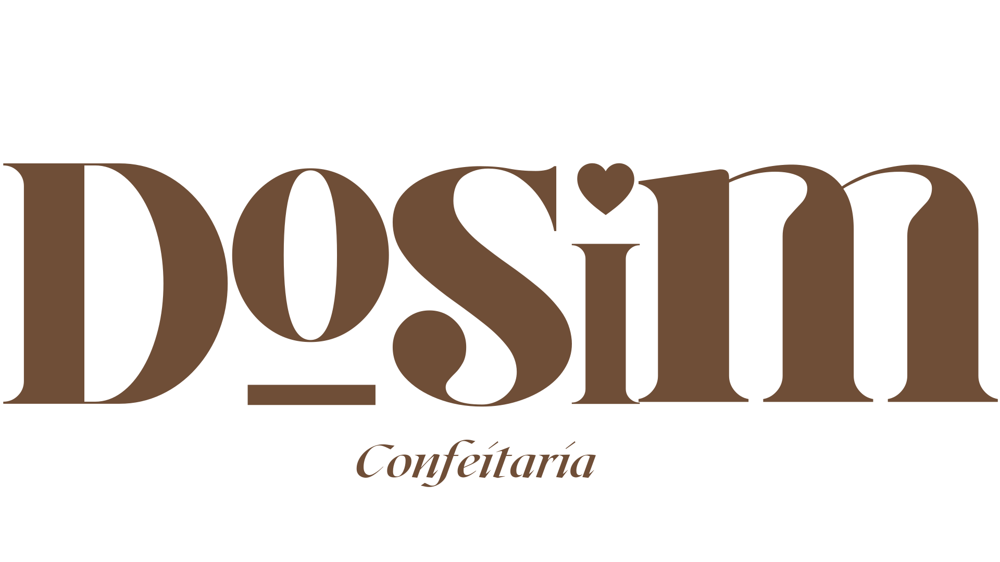

Cada biscoito é um passo para o nosso Sim!
Contagem-MG

Acesse nosso Instagram
Fale conosco via WhatsApp
Grupo VIP de promoções
Acesse nosso catálogo
Visite nosso site

Sobre nós
Somos um casal realizando o sonho de dizer "sim". 💍 Tudo começou com um simples biscoito de Natal, feito para presentear amigos. O carinho virou desejo, os pedidos começaram a chegar e assim nasceu a DoSim Confeitaria: doces feitos com amor.